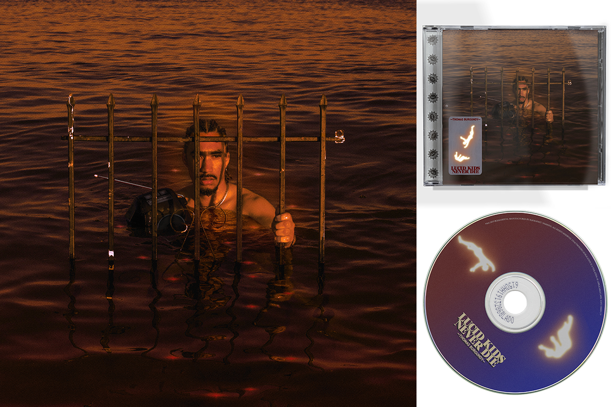
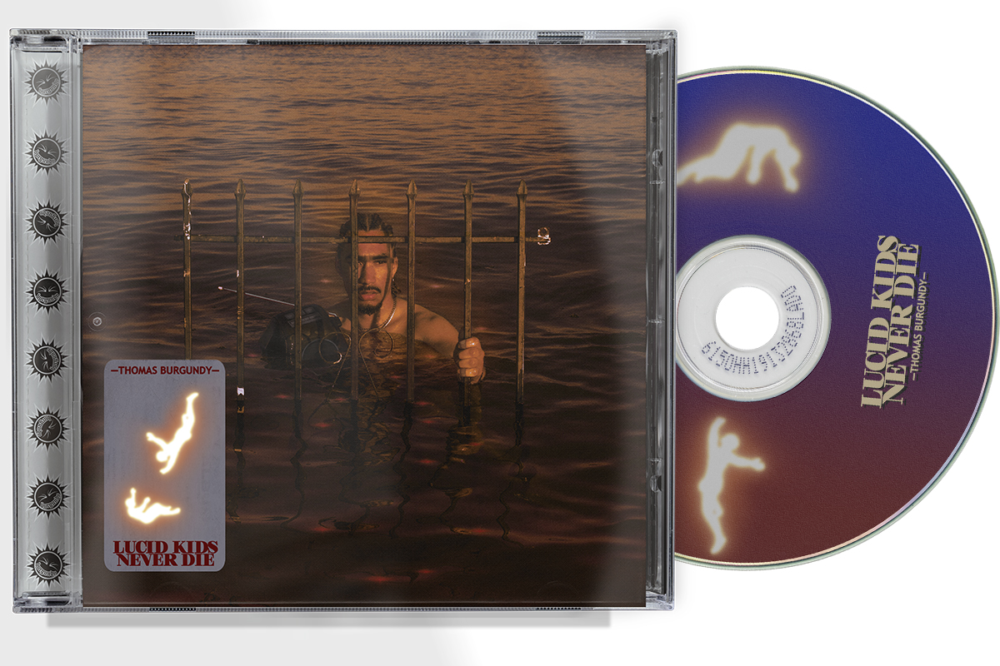
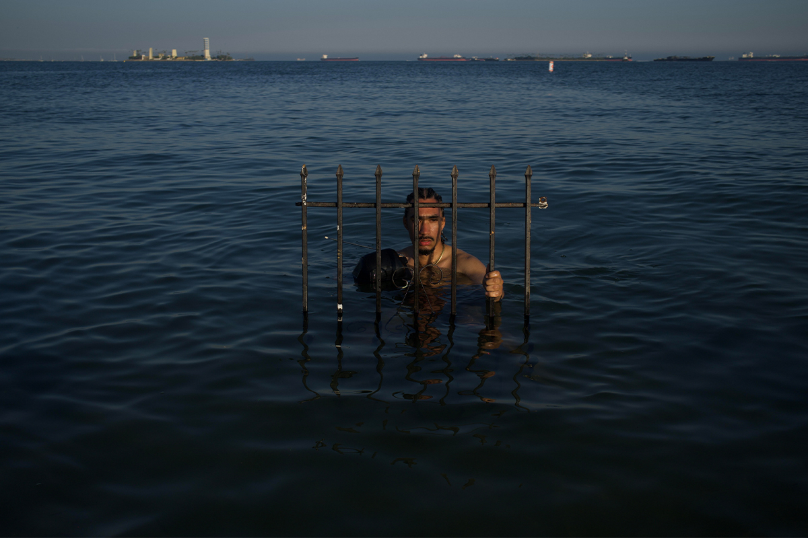
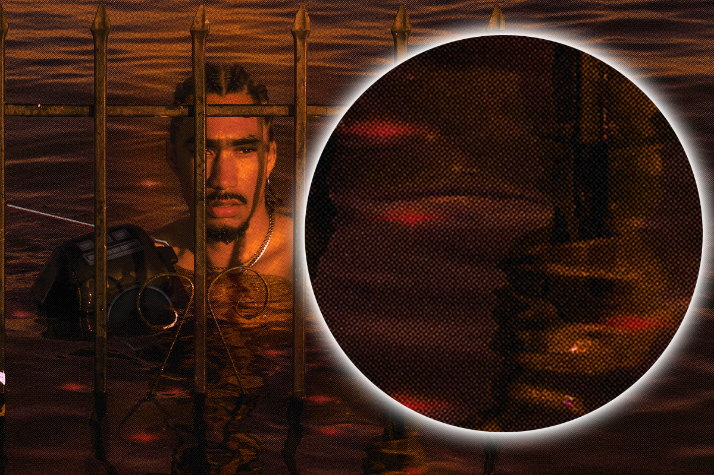

Thomas Burgundy - Lucid Kids Never Die.
Lucid Kids Never Die - A long awaited album by long time collaborator and patron of JJ.Graphics, Thomas Burgundy has released his long awaited album! The cover, track list, and album credits layout were altered and catered towards one unified vision of color, typography, and texture.
  